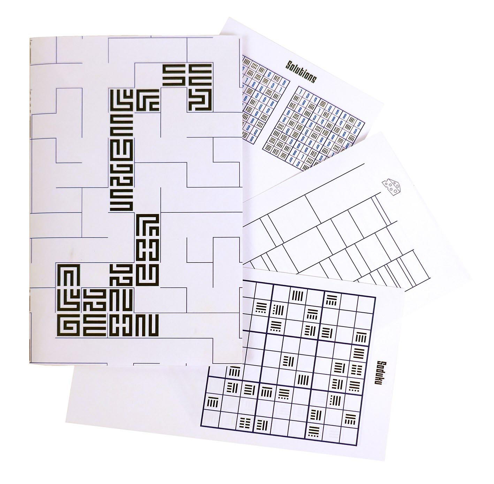
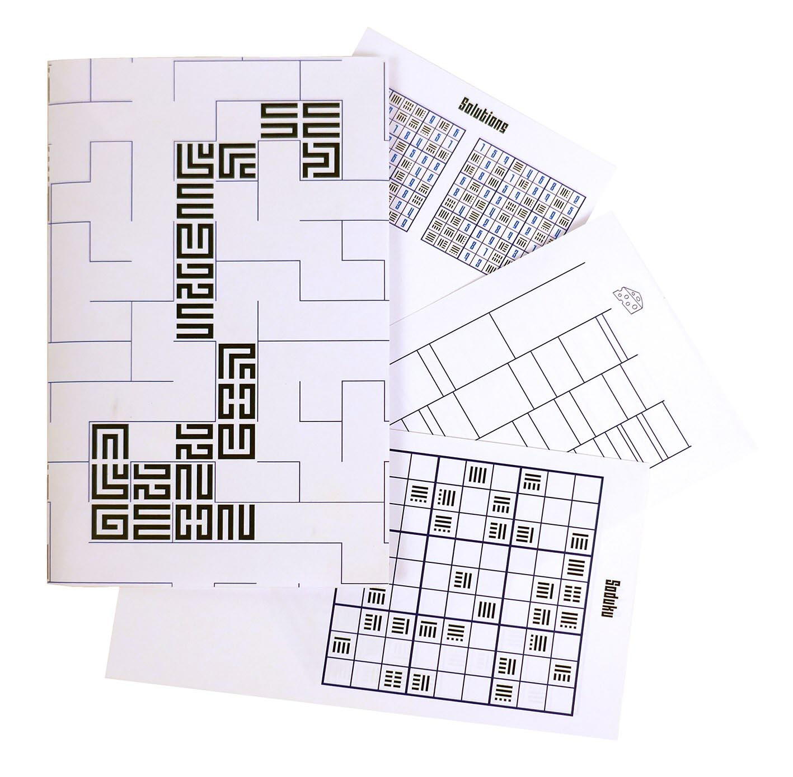

Ce projet est une propositioin de couverture pour attirer les lecteurs.
La couverture représente un labyrinthe en rapport avec les labyrinthes des souris de laboratoires. La typographie utilisée -Mourier de Eric Mourier- rappelle aussi ces labyrinthes. Les inserts sont des jeux de réflexions.
Pour voir une autre couverture faite dans cette optique cliquez ici

 
